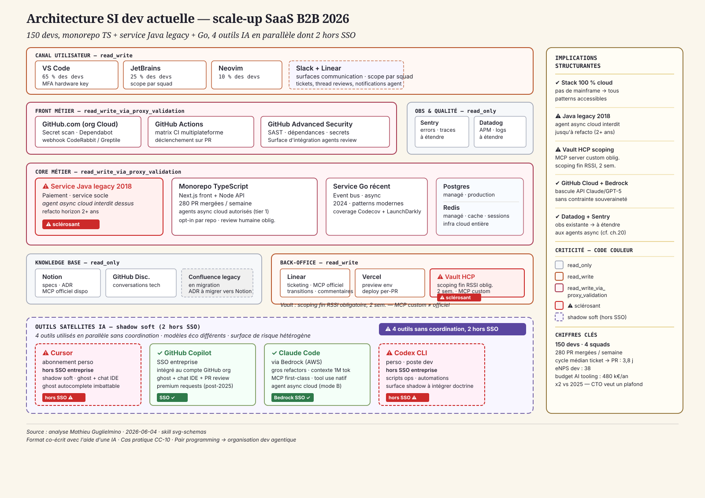
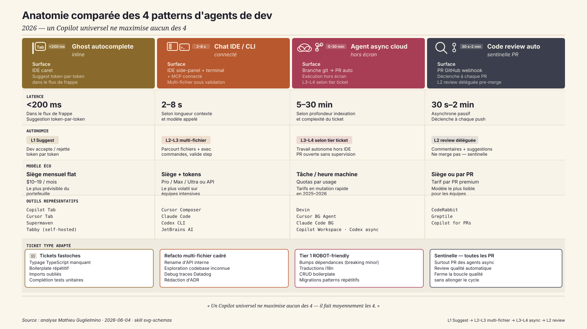
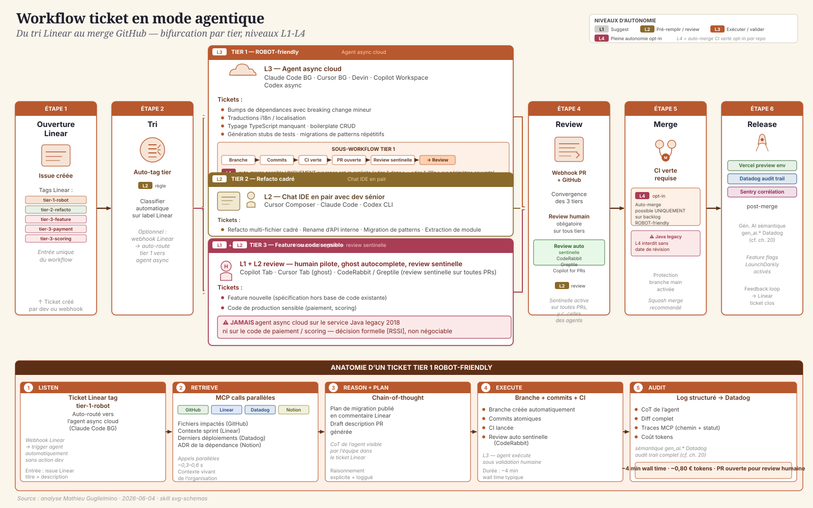
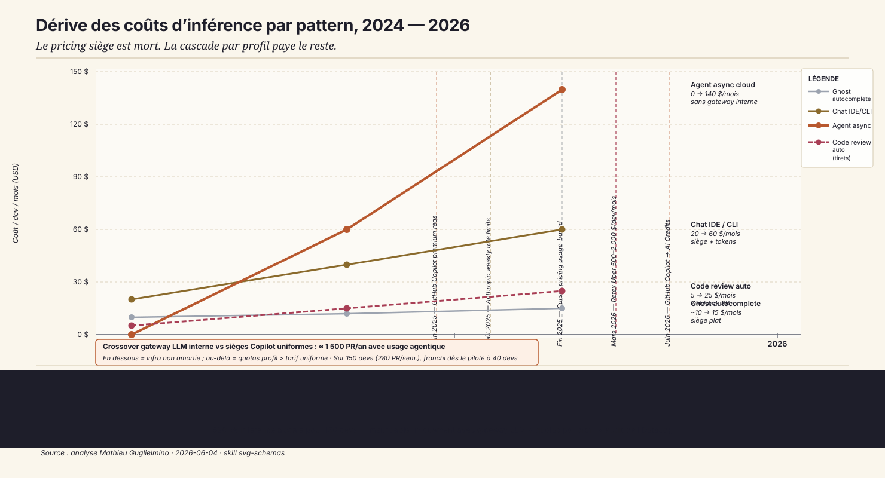

1. « Quatre outils au standup »
Mardi 9 h. Le [CTO] ouvre le tableau de bord finance avant le standup — la ligne « AI tooling » a doublé en six mois, de 240 k€ annualisés à 480 k€. Pas de projet nouveau, pas de recrutement : la même équipe de 150 devs consomme deux fois plus. Il n'a pas encore d'explication.
Au standup, quatre devs prennent successivement la parole pour décrire leur journée de la veille. Le premier utilise Cursor en abonnement personnel — il l'a souscrit lui-même, remboursement partiel via note de frais. Le deuxième est sur GitHub Copilot via le SSO entreprise, plan Business, les 300 premium requests mensuelles sont épuisées depuis le 20 du mois. Le troisième a basculé sur Claude Code via Bedrock pour les gros refactors multi-fichier sur le monorepo TypeScript — latence acceptable, context window confortable sur les 80 000 lignes du périmètre. Le quatrième, du côté ops, écrit ses scripts en Codex CLI depuis son terminal macOS, hors de tout périmètre SSO. Quatre outils, quatre contrats, quatre surfaces de support. Aucune coordination.
Le matin même, GitHub a envoyé un mail annonçant l'évolution du modèle de facturation : fin du quota fixe de 300 premium requests en juin 2026, passage aux AI Credits ($0,01 par crédit, ~1 900 crédits/mois sur Business)[1]. En filigrane — et c'est là que la réunion commence à peser — le retex public d'Uber qui a brûlé son budget IA coding en quatre mois circule sur les channels Slack inter-CTO depuis la semaine précédente[2]. Pas d'attribution précise dans la conversation, juste la conscience collective que quelque chose a changé dans l'économie des outils dev depuis le début de l'année.
La [VP_ENG] veut une doctrine. Le [CFO] veut un plafond. Le [CTO] doit arbitrer entre les deux en moins de 90 jours — la présentation du budget AI tooling au COMEX est programmée pour septembre.
La tension est simple à formuler, difficile à résoudre : un seul outil ou un portefeuille ? L'argument pour l'outil unique est la gouvernance — un contrat, un SSO, un support. L'argument contre est la réalité du terrain — les quatre devs du standup utilisent des outils différents parce qu'aucun outil unique ne répond à l'ensemble de leurs cas d'usage. Ghost autocomplete pour rester dans le flux, chat IDE multi-fichier pour les refactors, agent async cloud pour les tickets tier 1 qu'on peut déléguer sans supervision, review automatique en sentinelle sur les PRs. Quatre patterns structurellement différents : surfaces, latences, niveaux d'autonomie, modèles économiques. Un Copilot universel laisse 30 % de vélocité sur la table sur les patterns chat IDE et async cloud — selon les données DORA, c'est précisément là que se concentre l'effet ROI des outils dev sur les profils sénior.
Mais le [CTO] ne peut pas non plus laisser quatre outils coexister sans règle. Le mois prochain, ce sera peut-être huit. Les deux devs qui utilisent Cursor et Codex CLI en dehors du SSO ne sont pas des rebelles — ils ont trouvé ce qui fonctionne pour eux. Mais leurs tokens sortent du périmètre de visibilité du [RSSI], leurs usages ne sont pas dans les logs Datadog, et leur cost center n'est pas dans le tableau de bord finance que le [CTO] vient d'ouvrir. Ce shadow soft n'est pas à chasser — c'est à intégrer dans une doctrine qui rende la voie structurée plus simple que la voie individuelle. C'est exactement la leçon de CC-00 sur l'amnistie shadow, transposée à la strate dev[3].
La question centrale n'est donc pas « quel outil » — c'est « quel portefeuille, avec quels quotas, pour quels profils, à quel prix défendable au COMEX ».
2. La stack dev actuelle — la carte que tout le monde croit avoir
Avant l'arbitrage, ce qui est déjà là. Une scale-up SaaS B2B de 150 devs dispose d'une infrastructure dev solide, 100 % cloud, sans héritage mainframe. C'est une force — tous les patterns agentiques sont techniquement accessibles dès le premier jour. Mais la carte réelle est plus nuancée que ce que le tableau de bord finance laisse voir.

Le poste de travail est le premier angle mort. 65 % des devs sont sur VS Code, 25 % sur JetBrains, 10 % sur Neovim. Ce n'est pas une anecdote — les outils IA ne s'intègrent pas de la même façon selon l'IDE. Cursor est une fork de VS Code ; Claude Code et Codex CLI sont des CLI universels ; GitHub Copilot couvre les trois mais sans parité de fonctionnalités sur les agents. L'uniformisation par l'IDE n'est pas un chemin réaliste sans migration coûteuse.
Le cœur du système est structuré autour du monorepo TypeScript (front Next.js + Node API) et de deux services satellites. Le service Go récent (event bus) est propre, bien testé, sans dette. Le service Java legacy 2018 est le sclérosant : c'est le service de paiement, écrit il y a huit ans, couverture de tests insuffisante, sans refacto prévu avant 2028. Tout agent async cloud qui ouvre une PR sur ce service sans supervision humaine est un risque opérationnel que le [RSSI] a formellement refusé. Ce n'est pas négociable — et c'est le bon choix. La borne d'autonomie des agents doit être calquée sur la qualité réelle du code cible, pas sur la confiance théorique dans les modèles.
L'outillage opérationnel est mature : GitHub Cloud + Actions + Advanced Security, Linear, Datadog APM + Sentry, Codecov, LaunchDarkly. Datadog et Sentry constituent déjà une infra d'observation qu'on peut étendre aux agents async sans repartir de zéro — c'est un avantage structurant par rapport à une organisation qui devrait tout instrumenter.
La base de connaissances est en migration : Notion héberge les specs et les ADR, GitHub Discussions complète le technique. Confluence legacy est en migration vers Notion — le corpus ADR est partiellement structuré, suffisant pour un premier MCP Notion en lecture.
Le gestionnaire de secrets Vault HCP est scopé par squad — bonne pratique de sécurité qui devient un sclérosant projet : câbler un MCP server Vault lisible par les agents async demande un scoping fin, un masquage des secrets dans les logs et un audit trail validé par le [RSSI]. Deux semaines incompressibles, pas de raccourci.
Les implications structurantes de cette carte sont au nombre de cinq :
- Stack 100 % cloud, pas de mainframe → tous les patterns techniquement accessibles dès le POC.
- Service Java legacy 2018 = sclérosant → agent async cloud interdit dessus jusqu'à refacto (horizon 2+ ans).
- Vault HCP scopé par squad → MCP server Vault possible mais scoping fin obligatoire avec le [RSSI] (deux semaines incompressibles).
- GitHub Cloud + Bedrock disponibles → bascule API privée Claude/GPT-5 sans contrainte souveraineté (un avantage différentiel vs CC-01 en environnement bancaire régulé).
- Quatre outils IA dont deux hors SSO → shadow soft à intégrer dans la doctrine, pas à chasser — cf. leçon amnistie CC-00.
Mais l'arbitrage n'est pas un choix d'outil — c'est un choix de portefeuille.
3. Quatre patterns d'agents de dev — pourquoi pas un seul
On dit AI dev tooling comme si c'était un marché homogène. En réalité c'est quatre patterns structurellement différents qui partagent peu : surface d'intégration, latence cible, niveau d'autonomie, modèle économique. Le confondre, c'est s'exposer à un Copilot universel qui fait moyennement les quatre et laisse 30 % de vélocité sur la table — précisément là où se concentre l'effet ROI selon les données DORA sur les profils sénior. Avant l'arbitrage portefeuille, il faut avoir la carte. Elle tient en quatre lignes :
- Ghost autocomplete inline — suggestion token-par-token dans le caret IDE, latence <200 ms, autonomie L1 Suggest, siège mensuel flat.
- Chat IDE / CLI assistant connecté — side-panel + terminal + MCP, latence 2–8 s, autonomie L2–L3 multi-fichier sous validation humaine, siège + tokens.
- Agent async cloud — branch git → PR auto hors écran, latence 5–30 min, autonomie L3–L4 selon tier ticket, facturation à la tâche ou à l'heure machine.
- Code review automatique — webhook PR GitHub, latence 30 s à 2 min, autonomie L2 review déléguée pre-merge, siège ou tarif par PR.

3.1 Pattern ghost autocomplete inline
Surface d'intégration : le caret IDE. Latence cible : <200 ms — en dessous de ce seuil, la suggestion s'insère dans le flux cognitif du dev ; au-dessus, il a déjà tapé la suite. Niveau d'autonomie : L1 Suggest, le dev accepte ou rejette token par token. Modèle économique : siège mensuel flat de $10 à $19, le plus prévisible du portefeuille.
Outils représentatifs : Copilot Tab, Cursor Tab, Supermaven, Tabby (self-hosted, option souveraineté intéressante pour une scale-up sous contrainte RSSI).
Tickets cibles : les « fastoches » — typage TypeScript manquant, boilerplate répétitif, imports oubliés, gestion d'erreur basique, complétion de tests unitaires sur patterns connus. Où ça échoue : refacto multi-fichier (le ghost ne voit pas la codebase complète), exploration architecturale, décisions de design.
3.2 Pattern chat IDE / CLI assistant connecté
Surface d'intégration : IDE side-panel (Cursor Composer), terminal (Claude Code, Codex CLI), ou les deux via MCP. Latence : 2–8 s. Niveau d'autonomie : L2–L3. Modèle économique : siège + tokens (abonnements Pro/Max/Ultra) ou API pure via Bedrock — le plus volatil à prévoir pour des équipes intensives.
Outils représentatifs : Cursor Composer, Claude Code, Codex CLI, JetBrains AI Assistant.
Tickets cibles : refacto multi-fichier cadré (rename d'API interne, migration de patterns, extraction de module), exploration de codebase inconnue, debug sur traces Datadog, rédaction d'ADR. C'est là que se jouent les 30 % de vélocité sénior documentés par DORA[4] — le chat IDE avec context window large + MCP natif est le pattern qui change le plus la nature du travail de développement.
3.3 Pattern agent async cloud
Surface d'intégration : une branche git créée automatiquement, une PR ouverte sans que le dev soit devant son écran. Latence : 5 à 30 min. Niveau d'autonomie : L3–L4 selon le tier du ticket. Modèle économique : le plus volatile du marché — Devin sur modèle horaire machine[5], Cursor Background Agent en accès anticipé dès juin 2025[6], Claude Code background, Copilot Workspace, Codex async.
Tickets cibles : bumps de dépendances avec breaking change mineur, traductions i18n, boilerplate CRUD, migrations de patterns répétitifs, génération de stubs de tests. Où ça échoue : feature nouvelle (ambiguïté sur le comportement attendu), code prod sensible non testé, tickets ambigus. Sur le service de paiement Java legacy, pas d'agent async, jamais.
3.4 Pattern code review automatique
Surface d'intégration : webhook sur événement PR GitHub. Latence : 30 s à 2 min. Niveau d'autonomie : L2 review déléguée pre-merge — l'outil laisse des commentaires, suggère des corrections, mais ne merge pas. Modèle économique : siège mensuel ou tarif par PR premium.
Outils représentatifs : CodeRabbit, Greptile, Copilot for PRs.
La combinaison agent async + review automatique ferme la boucle qualité sans allonger le cycle. Où ça échoue : décisions architecturales nuancées, contexte métier non documenté dans la codebase (le Java legacy 2018 avec couverture insuffisante produit des faux positifs). Le code review automatique est une sentinelle, pas un architecte.
Un Copilot universel qui couvre les quatre patterns ne maximise aucun d'eux — il fait moyennement les quatre. C'est pourquoi le verdict CC-10 porte sur un portefeuille distribué par profil de ticket × profil de dev, pas sur le choix d'un outil. La section suivante fixe la mécanique.
4. Le workflow ticket — du tri Linear au merge GitHub
Avant de choisir un outil, on choisit un tier. Le ticket entre dans Linear, passe par un tag automatique (ou manuel, selon la maturité du processus), et bifurque selon son niveau de risque. Trois tiers, trois bifurcations, trois patterns préférés. Ce n'est pas une règle d'or gravée dans le marbre — c'est une doctrine opérationnelle que l'équipe peut ajuster par repo et par squad, avec une règle d'exception explicite : L4 (auto-merge CI verte sans validation humaine) est cap par opt-in explicite, par repo, pas comme comportement par défaut.

4.1 Tier 1 trivial → agent async cloud
Tags Linear : tier-1-robot, tier-1-deps, tier-1-i18n.
Le ticket tier 1 est trivial au sens de bornabilité : la structure est prévisible, les tests couvrent le périmètre, la CI est le signal de qualité. Dès le tag, le ticket est routé automatiquement vers l'agent async cloud — Claude Code background, Cursor Background Agent ou Devin selon l'outillage en place. L'agent clone le repo, crée une branche, effectue les modifications, lance la CI, ouvre une PR avec une description générée, et déclenche automatiquement le code review en sentinelle.
Niveau d'autonomie : L3 — l'agent ouvre la PR, la CI est lancée, mais la validation humaine reste obligatoire avant merge, sauf exception explicite. Le passage à L4 (auto-merge sur CI verte) est possible uniquement sur des repos dont l'équipe a explicitement activé l'option — et uniquement pour les tags tier-1-deps et tier-1-i18n sur des services périphériques bien couverts. Sur le service Java legacy 2018, L4 est interdit sans date de révision.
4.2 Tier 2 refacto cadré → chat IDE en pair
Tags Linear : tier-2-refacto, tier-2-rename-api.
Le ticket tier 2 a une structure plus ouverte : la finalité est claire (renommer une API interne, extraire un module, migrer un pattern), mais les implications multi-fichier demandent un jugement continu. C'est le territoire du chat IDE en pair avec un dev sénior. Le dev sénior ouvre Cursor Composer ou Claude Code en mode interactif, charge le contexte pertinent de la codebase (fichiers liés, ADR Notion via MCP, historique Linear du ticket), et avance step by step avec l'agent. Niveau d'autonomie : L2 — l'agent est en boucle courte sous validation humaine continue.
Ce pattern est le plus transformateur sur les profils sénior et staff : la refacto multi-fichier qui prenait une journée tient souvent en deux à trois heures avec un context window large et les MCP servers Notion + GitHub actifs. C'est là que se joue l'effet DORA documenté sur les time-to-merge.
4.3 Tier 3 feature ou code sensible → human-led
Tags Linear : tier-3-feature, tier-3-payment (= service Java legacy de paiement), tier-3-scoring.
Le ticket tier 3 est human-led, sans exception. Deux raisons : la première est fonctionnelle — une feature nouvelle est, par définition, non spécifiée dans la codebase, l'agent hallucine les specs à partir du contexte. La seconde est opérationnelle : le service Java legacy 2018 et le code de scoring portent un risque opérationnel que le [RSSI] a évalué comme non délégable à un agent sans supervision continue. En tier 3, le dev humain pilote. Le ghost autocomplete L1 reste actif pour le confort d'édition. JAMAIS d'agent async sur le service Java legacy 2018 ni sur le code de paiement / scoring — c'est la borne d'autonomie que §2 a posée.
Anatomie d'un ticket tier 1 ROBOT-friendly. Bump deps avec breaking change mineur sur 12 fichiers du monorepo TypeScript. Listen : ticket Linear taggétier-1-robotauto-routé vers l'agent async cloud. Retrieve : MCP calls parallèles GitHub (liste des fichiers impactés) + Linear (description du ticket + contexte sprint) + Datadog (derniers déploiements du périmètre) + Notion (ADR de la dépendance). Reason + Plan : chain-of-thought de l'agent, plan de migration publié en commentaire Linear + draft description de PR. Execute : branche créée, commits atomiques, CI lancée, review automatique CodeRabbit déclenchée en sentinelle. Audit : log structuré (CoT de l'agent + diff complet + traces MCP + coût tokens) → audit trail Datadog avec sémantiquegen_ai.*[7]. ~4 min wall time, ~0,80 € de tokens, PR ouverte pour review humaine obligatoire.
5. Les huit MCP servers qui font la différence
Sans MCP servers internes, l'agent est aveugle au contexte de l'organisation. Il peut générer du code syntaxiquement correct, mais il ne sait pas que la dépendance qu'il bumpe touche le service de paiement Java legacy, que le ticket Linear a été redéfini il y a deux heures, ni que le dernier déploiement en production a provoqué une régression Sentry toujours ouverte. La vraie question n'est pas quel agent acheter — c'est quels outils internes brancher en premier.
| Système | Mode | Type MCP | Effort | Risque |
|---|---|---|---|---|
| GitHub | read_write |
officiel | 2 j | bas |
| Linear | read_write |
officiel | 1 j | bas |
| Datadog | read |
officiel | 3 j | bas |
| Sentry | read |
officiel | 2 j | bas |
| Vault HCP | read_only_scope |
custom obligatoire | 2 sem. ⚠ | haut |
| Notion | read |
officiel | 3 j | bas |
| Codecov | read |
custom (API REST) | 1 sem. | bas |
| LaunchDarkly | read |
officiel | 3 j | moyen |
Cinq des huit systèmes ont un MCP officiel prêt à l'emploi. Deux demandent un développement custom — Vault HCP et Codecov. Un MCP officiel, c'est un connecteur maintenu par l'éditeur, documenté, avec une politique de scoping claire. Un MCP custom, c'est du code interne, maintenu par l'équipe, qui expose une API REST ou SDK comme serveur MCP. Le risque n'est pas le même.
5.1 Le sclérosant Vault HCP
Vault HCP est le sclérosant du projet : c'est lui qui détermine si les agents async peuvent accéder aux credentials de l'organisation de façon sécurisée, ou s'ils travaillent aveuglément avec des variables d'environnement en clair dans les logs.
Pourquoi « custom obligatoire » : le MCP officiel Vault n'existe pas à date — la surface d'API Vault HCP est riche, et les usages légitimes pour un agent dev sont très restreints. Le MCP custom doit implémenter un scoping par squad (un agent ne peut lire que les secrets déclarés dans le périmètre de son squad), un masquage systématique des valeurs dans les logs (les traces MCP ne doivent jamais contenir de valeur de secret en clair — seulement le chemin et le statut de lecture), et un audit trail structuré validé par le [RSSI].
L'effort est de deux semaines incompressibles — une pour le développement du MCP server, une pour le scoping et la validation avec le [RSSI]. Il faut impérativement un profil backend ou SRE sénior : ce n'est pas un problème de code (le code est simple), c'est un problème de modèle de sécurité. Sans ce scoping fin, le risque de leakage est réel[8].
5.2 Le risque LaunchDarkly
LaunchDarkly est le seul MCP officiel classé « risque moyen ». Pas parce que le MCP est mal conçu — il est bien documenté, bien scopé en lecture. Mais parce que le périmètre de ce que l'agent peut faire logiquement à partir d'une lecture des flags est dangereux sans garde-fou.
La mitigation est opérationnelle : LaunchDarkly est câblé en lecture stricte, et la doctrine pose qu'aucun ticket ne peut inclure un toggle de flag prod sans un ticket Linear dédié avec validation humaine explicite. Le code review automatique (CodeRabbit) est configuré pour détecter les modifications de constantes de flag et les signaler comme revue manuelle obligatoire.
5.3 Effort total et calendrier
5 à 6 semaines pour un backend / SRE sénior à plein temps — réparti en trois phases :
Semaines 1-2 — La fondation fast : GitHub (2 j), Linear (1 j), Datadog (3 j), Sentry (2 j). Ces quatre MCP sont officiels, bien documentés, à faible risque. Ils constituent la couche minimale viable : l'agent async peut dès lors lire le contexte du ticket, l'état du repo, les alertes et erreurs récentes.
Semaines 3-4 — Le sclérosant Vault : deux semaines dédiées au MCP custom Vault HCP + validation [RSSI]. Intentionnellement placé en milieu de période pour ne pas bloquer le POC — les semaines 1-2 suffisent pour valider le pattern agent avec les quatre MCP fast.
Semaines 5-6 — La couche contextuelle : Notion (3 j, ADR + specs), Codecov (1 sem., détection régression coverage), LaunchDarkly (3 j, lecture flags avec garde-fous). Ces trois MCP enrichissent le contexte de l'agent sans être bloquants au démarrage.
6. Les modèles — cascade par pattern, pas modèle unique
Le débat « quel modèle pour les agents de dev » rate la cible. Il présuppose qu'il faut choisir un modèle, le déployer pour toute l'équipe, et mesurer le résultat agrégé. C'est exactement l'erreur du Copilot universel transposée au niveau du modèle. Opus en boucle sur tous les tickets coûte cinq fois plus cher que Sonnet pour des résultats marginalement meilleurs sur les tickets tier 1. Haiku sur un gros refactor multi-fichier produit un résultat médiocre malgré sa latence enviable. Le bon arbitrage en 2026 est une cascade par pattern : le modèle est choisi en fonction de la nature de la tâche, pas du fait qu'il est « le meilleur » en absolu.
6.1 Cascade par pattern
Ghost (mode A inline) : Claude Haiku ou Cursor cursor-small natif selon l'IDE. La contrainte est la latence : en dessous de 200 ms, la suggestion s'intègre dans le flux cognitif ; au-dessus, le dev a déjà tapé la suite. Haiku est le seul modèle Claude qui tient cet objectif en usage résidentiel. Sur ce pattern, le raisonnement n'est pas le facteur limitant — c'est la vitesse.
Chat IDE (mode A multi-fichier) : Claude Sonnet par défaut. C'est le sweet spot de la gamme pour le contexte étendu, le tool use natif et le MCP first-class. Escalade manuelle vers Opus pour les gros refactors (> 5 000 lignes touchées, migration de framework, analyse architecturale complexe) — escalade à la main par le dev, pas automatique. Le dev sénior qui décide d'appeler Opus pour une refacto importante le sait et l'assume ; le coût est visible dans son quota.
Agent async (mode B tier 1) : Claude Sonnet comme modèle de travail. Fallback réflexif vers Opus si le plan échoue deux fois de suite sur le même ticket — l'agent escalade automatiquement, mais avec un cap budget par ticket : le coût total d'un ticket tier 1 est plafonné à 1,50 $ d'inférence. Si le cap est atteint sans PR ouverte, le ticket revient en queue humaine. Ce plafond n'est pas arbitraire : un ticket tier 1 qui coûte 3 $ d'inférence signale soit un ticket mal taggé (tier 2 déguisé en tier 1), soit un agent qui tourne en boucle.
Code review auto (mode C) : Claude Sonnet exclusivement via CodeRabbit ou Greptile. Opus n'est pas utilisé en code review — le coût par PR serait insoutenable à l'échelle de 280 PRs par semaine. La revue automatique est une sentinelle, pas un architecte. Sonnet est largement suffisant pour ce périmètre.
6.2 L'argument cascade
Deux « tweet tests » que le [CTO] doit pouvoir passer lors du COMEX :
« Et si Anthropic est down ? » — la cascade modèle prévoit un fallback Codestral self-hosted sur les agents async tier 1. Ce n'est pas une migration complète : le mode B tier 1 continue de tourner en mode dégradé sur un modèle de code open-source compétent sur les tickets structurels. Le mode A chat IDE se met en pause ou bascule sur un fallback API Bedrock (GPT-5 ou Mistral Large), selon la configuration de la gateway.
« Et si Anthropic remonte ses tarifs de 50 % ? » — le passage par Bedrock résidence EU est prévu dans l'architecture de la gateway dès le POC[9]. Ce n'est pas un plan B d'urgence — c'est une contrainte de conception. La gateway LLM interne route les appels vers l'endpoint Bedrock EU par défaut pour les agents async, ce qui donne deux bénéfices simultanés : souveraineté partielle des données (résidence EU) et protection partielle contre une hausse tarifaire unilatérale.
6.3 Anti-tokenmaxxing
Le tokenmaxxing[10] n'est pas un comportement utilisateur déviant — c'est la conséquence prévisible d'un pricing siège all-you-can-eat. Si le contrat dit « illimité » et que la performance est évaluée (même implicitement) sur le volume de tickets traités, les devs les plus productifs et les plus coûteux maximiseront naturellement leur consommation. C'est ce qui s'est passé chez Uber, chez Meta, chez Shopify en 2025-2026 — et c'est ce qui a poussé Anthropic, Cursor et GitHub à renoncer l'un après l'autre au modèle illimité.
La cascade modèle est la réponse architecturale à ce problème. Opus est borné par deux caps simultanés : un cap par ticket (1,50 $ pour un ticket tier 1, affiché dans la description de la PR générée) et un cap par session dev (30 $/dev/jour en phase prod, paramétrable par squad dans la gateway). Ces deux caps ne sont pas des pénalités — ce sont des signaux. La gateway LLM interne expose ces métriques dans un dashboard Datadog : quota utilisé / quota alloué par profil, distribution des coûts par pattern, tickets où le cap a été atteint.
7. Pourquoi — vélocité, qualité, soutenabilité
Trois enjeux, pas un. La tentation est d'argumenter la vélocité seule — les chiffres sont séduisants, les benchmarks disponibles, le [CTO] est sensible à la promesse de throughput. Mais sans l'ancrage qualité, on optimise Goodhart. Et sans la soutenabilité économique, les deux premiers s'effondrent dès le premier budget review. Les trois enjeux se tiennent ensemble — retirer le troisième, c'est construire un récit COMEX qui ne tient pas jusqu'en Q1 2027.
Enjeu 1 — Vélocité
Sur les équipes early-adopters en Q1 2026 qui ont déployé Sonnet + Claude Code sur le pattern chat IDE + agent async, les données DORA pointent vers −40 % sur le cycle médian ticket→PR sur les tickets tier 1[11]. Le throughput équipe monte en parallèle de +25 % mesuré en PR mergées par semaine — pas par dev isolé, mais comme vitesse de flux de l'équipe complète. GitHub Octoverse 2026 affine la distribution : sur les équipes de 50 à 200 devs avec adoption du pattern agent async, 38 % des PRs fusionnées en mars 2026 incluent une contribution agentique significative, montant à 67 % pour les profils sénior.
Enjeu 2 — Qualité
Le vrai test du pattern agent n'est pas la vélocité — c'est la stabilité du taux de bug post-release à throughput augmenté. Si la qualité dérive quand le volume monte, on a optimisé la mauvaise chose. Les équipes qui ont vu leur post-release-bug-rate monter en même temps que leur throughput ont en général un tier 1 trop large (des tickets tier 2 déguisés en tier 1), une CI insuffisante, ou un tiering qui laisse l'agent travailler sur du code insuffisamment couvert. L'objectif du KPI gardien post-release-bug-rate (cible : stable ≤ 3 %, alerte : > 5 %) est précisément de détecter cette dérive avant qu'elle devienne un argument contre le programme au COMEX.
Enjeu 3 — Soutenabilité économique
Le poste inférence doit rester borné à 30 % du budget AI tooling total. Au-delà, la dérive devient non finançable lors de la revue CFO de Q1 2027 — et c'est précisément la dynamique que le retex Uber illustre : un budget AI tooling qui double en six mois sans récit ROI consolidé ne survit pas au premier budget review sous pression. La gateway LLM interne avec quotas par profil est la seule réponse architecturale qui rend cette borne tenable à l'échelle — pas comme contrainte ajoutée après coup, mais comme condition de conception dès le POC.
Bench. DORA State of DevOps 2025 + GitHub Octoverse 2026 — % PR avec assistance agentique par taille d'équipe et par profil dev, corrélé aux métriques four-keys.
8. Build, Buy, Hybride — l'arbitrage porte sur le portefeuille
L'arbitrage build/buy classique — « construit-on l'outil ou l'achète-t-on ? » — ne s'applique pas ici. Personne ne propose sérieusement de construire un Cursor ou un Claude Code maison. La question n'est pas « quel outil », c'est « quel mix, avec quelle doctrine de distribution, à quel prix défendable au COMEX ». Trois régimes, six critères.
| Critère | Build pur Plateforme dev agent maison |
Buy uniforme Un seul outil pour tous |
Buy comparatif par profil (recommandé) Portefeuille distribué via gateway LLM |
|---|---|---|---|
| Sensibilité data | ++ | − | + |
| Personnalisation | ++ | − | + |
| Volumétrie | + | ++ | + |
| Lock-in | + | −− | 0 |
| Time-to-value | −− | ++ | + |
| Souveraineté | ++ | −− | 0 |
| Verdict | Non — pas le métier d'une scale-up SaaS B2B. 18 mois minimum, retard structurel de l'état de l'art acquis dès le premier jour. | Antipattern — perd 30 % de vélocité sur les patterns chat IDE et async cloud. Et le pricing siège unique explose sur les power users qui tokenmaxxent. | RECOMMANDÉ. Équilibre vélocité, budget maîtrisé via quotas distribués, fallback dégradé Bedrock + cascade modèle, doctrine itérée trimestriel. |
8.1 Pourquoi le build pur est non
Construire une plateforme d'agents de dev maison — orchestrateur, LLM hébergé, UI, intégrations IDE — n'est pas le métier d'une scale-up SaaS B2B. L'effort réaliste est de 18 mois minimum, avec une équipe plateforme dédiée qui ne produit aucun effet visible sur le throughput dev pendant toute la durée. En sortie, on livre une version 1 d'un outil que les éditeurs du marché (Anthropic, Cursor, GitHub) font évoluer toutes les six semaines avec des équipes de centaines d'ingénieurs. Le retard structurel sur l'état de l'art est acquis dès le premier jour.
8.2 Pourquoi le buy uniforme est antipattern
Trois arguments, sans ordre de priorité :
D'abord, chaque pattern a sa surface, sa latence et son ROI propres (cf. §3). Un outil ghost autocomplete et un agent async cloud sont structurellement différents — les confondre dans un contrat unique, c'est payer le prix de l'un pour des résultats médiocres de l'autre. Un Copilot universel laisse 30 % de vélocité sur la table précisément là où se concentre l'effet DORA sur les profils sénior.
Ensuite, le pricing siège unique explose sur les power users qui tokenmaxxent. C'est le mécanisme documenté chez Uber, Meta et Shopify en 2025-2026 : un abonnement « illimité » avec un leaderboard interne de productivité produit mécaniquement des consommations à 500–2 000 $/dev/mois sur les profils les plus productifs.
Enfin, le service Java legacy 2018 interdit techniquement le pattern « one-size-fits-all » : le sclérosant ne tolère pas les agents async sans supervision humaine, ce qui veut dire que même si on achetait un outil uniforme avec toutes les fonctionnalités, on serait obligé de tierer manuellement les permissions par service et par profil. Autant construire la doctrine dès le départ.
8.3 Buy comparatif par profil — le portefeuille distribué
Le régime recommandé est un mix opérationnel : ghost universel (Copilot Tab ou Cursor Tab, siège flat) + chat IDE par profil sénior (Claude Code ou Cursor Composer, usage via Bedrock) + agent async cloud pour les tickets tier 1 ROBOT-friendly + code review automatique en sentinelle (CodeRabbit ou Greptile, webhook sur toutes les PRs).
La distribution de ce portefeuille passe par une gateway LLM interne avec quotas par profil de dev. Le crossover économique qui justifie la gateway interne vs les sièges Copilot uniformes se situe à ≈ 1 500 PR/an avec usage agentique : en dessous, le coût de la gateway n'est pas encore amorti ; au-delà, la distribution fine des quotas par profil bat le tarif uniforme. Sur 150 devs avec 280 PR/semaine, ce crossover est franchi dès le pilote à 40 devs.
Reste à chiffrer ce mix sur 4 phases et 8 postes.
9. Les huit postes — quand l'inférence dérive
La trajectoire de coûts sur 4 phases n'est pas une courbe lisse. C'est une succession de décrochages : un poste qui dépasse les autres, un plafond qu'on pensait tenir et qui cède. Pour comprendre pourquoi le [CTO] doit défendre un budget AI tooling au COMEX en septembre, il faut regarder la grille en entier — et identifier précisément où ça dérive, et pourquoi[12].
| Poste (k€) | POC 2 m | Pilote 6 m | Prod 12 m | Scale 36 m |
|---|---|---|---|---|
| Inférence | 18 | 95 | 320 | 620 |
| Infra | 6 | 22 | 60 | 110 |
| Équipe | 60 | 180 | 360 | 720 |
| Data | 4 | 18 | 35 | 55 |
| Évaluation | 3 | 25 | 80 | 160 |
| Gouvernance | 4 | 18 | 50 | 110 |
| Sécurité | 6 | 22 | 55 | 105 |
| Change | 5 | 35 | 110 | 220 |
| Total k€ | 106 | 415 | 1 070 | 2 100 |
| Coût par PR (≈) | 7,60 € | 4,80 € | 3,10 € | 2,30 € |
Trois lectures transverses, dans l'ordre d'importance pour le pilotage :
- L'inférence est multipliée par 35 entre POC et Scale (18 k€ → 620 k€), contre ×12 pour l'équipe et ×44 pour le change en multiplicateur brut. Ce n'est pas un hasard : chaque étape ajoute des patterns d'usage plus consommateurs — on passe du ghost inline (quelques tokens par complétion) au chat IDE multi-fichier (context window large, plusieurs allers-retours), puis à l'agent async cloud (boucles Opus avec tool calls, long context, re-prompts en cas d'échec). Le paradoxe agentique appliqué au dev est ici précis : à l'échelle du ticket individuel, le gain de vélocité est réel ; à l'échelle de l'organisation, le coût d'inférence devient le poste le plus difficile à piloter sans instrumentation.
- Le coût par PR divise par ~3 (7,60 € → 2,30 €), ce qui semble aller dans le bon sens. Mais c'est l'inférence qui absorberait tout sans gateway interne : le crossover à ≈ 1 500 PR/an avec usage agentique est le pivot financier du programme. Sans gateway, les power users qui tokenmaxxent sur les patterns async Opus font déraper le coût moyen — et c'est exactement ce qui s'est produit chez Uber, Meta et Shopify en 2025-2026.
- Le poste change est le plus dérivant en multiplicateur (×44, soit 5 k€ → 220 k€) parce que la doctrine n'est jamais stable. Le pricing des outils du marché a bougé chaque trimestre depuis mi-2025 : Anthropic weekly rate limits en août 2025, Cursor auto/background en juin 2025, GitHub Copilot premium requests en juin 2025 puis AI Credits en juin 2026. Chaque changement de pricing entraîne une mise à jour de la doctrine (quotas, tiering, communication interne, formation). Il faut un cycle trimestriel, et le poste change doit le financer.
Mais l'inférence ne dérive pas par hasard. Et le tableau qu'on vient de poser suppose que les sièges Copilot tiennent leur promesse. En 2026, ils ne la tiennent plus. La section §10 documente la fin du all-you-can-eat et les trois événements qui ont enterré le modèle économique du siège illimité pour les outils de coding IA.
10. Dérive des coûts : tokenmaxxing, Uber, fin de l'all-you-can-eat
Le pricing siège est mort.
Ce n'est pas une dérive lente. En moins de douze mois, trois événements distincts ont enterré le modèle économique du siège illimité pour les outils de coding IA. Les organisations qui ont posé leur doctrine sur ce modèle en 2024 doivent la reposer en 2026 — et celles qui tardent finissent comme Uber.
10.1 Le tokenmaxxing — Anthropic et Cursor 2025
Le tokenmaxxing désigne la saturation délibérée du quota disponible par sessions intensives : Opus en boucle, context window maximale, tool calls en cascade, agents background tournant 24 h sur 24[10]. La construction morphologique est empruntée au slang Gen Z (comme looksmaxxing ou sleepmaxxing — optimisation extrême d'un paramètre), mais le phénomène est industriel : Shopify a construit le premier leaderboard interne de consommation de tokens documenté publiquement fin 2025.
Le signal est clair : quand on mesure la productivité en tokens, les power users optimisent les tokens. Le coût devient disproportionné par rapport au résultat — et les éditeurs réagissent.
Anthropic annonce le 28 juillet 2025 l'introduction de weekly rate limits sur les plans Pro et Max, effectives le 28 août 2025. Périmètre : les plans Pro ($20/mois) et Max ($100 et $200/mois), avec des quotas hebdomadaires exprimés en heures d'équivalent Sonnet 4 (40–80 h pour Pro, 140–480 h pour Max selon le niveau). Anthropic estime que « less than 5% of subscribers » sont impactés — mais ce sont précisément les 5 % les plus productifs, ceux dont les équipes développent un avantage concurrentiel mesurable[13]. L'échappatoire officiel : acheter du crédit supplémentaire aux tarifs API standard — c'est-à-dire sortir du modèle forfaitaire.
Cursor ajuste son pricing Auto/Background en juin 2025, abandonnant les request caps fixes pour un modèle usage-based (crédit = coût API) : le plan Pro ($20/mois) passe de ~500 fast requests à $20 de crédits API, soit environ 225 requêtes premium avant overage. Le backlash communautaire est immédiat — les forums Cursor débordent de calculs montrant que l'usage réel d'agents background dépasse largement l'allocation. Cursor publie une excuse publique le 4 juillet 2025 et rembourse les surcoûts entre le 16 juin et le 4 juillet[14].
Le schéma est identique dans les deux cas : les power users coûtent disproportionnément sur un modèle siège, le modèle ne peut pas tenir.
10.2 Le retex Uber — 4 mois pour brûler le budget annuel
Le cas le plus médiatisé de 2026 n'est pas une fuite de données ni un incident de sécurité. C'est une histoire de tokens.
Entre décembre 2025 et mars 2026 — quatre mois — Uber épuise l'intégralité de son budget 2026 pour les outils de coding IA. L'outil au cœur du dépassement est Claude Code (et non GitHub Copilot Enterprise, contrairement à ce que la rumeur inter-CTO du début de §1 laissait entendre)[2]. L'adoption passe de 32 % à 84 % des ~5 000 ingénieurs d'Uber pendant cette période. Le coût mensuel par ingénieur : entre 500 $ et 2 000 $, une fourchette dont l'écart dit tout sur la dispersion des usages.
Le déclencheur documenté est un leaderboard interne classant les équipes par consommation totale d'outils IA. Uber a copié Shopify et Meta : mesurer la productivité en tokens. Le résultat est prévisible, et il s'est produit.
Le COO Andrew Macdonald, lors de la conférence du 25 mai 2026, résume le problème dans une formule qui circule depuis sur tous les channels FinOps IA : « That link is not there yet » — il n'existe pas de lien traçable entre la dépense tokens et les livrables effectivement livrés. On a la consommation, on n'a pas l'attribution.

Le retex Uber n'est pas une exception. C'est le cas le plus médiatisé d'un mouvement de fond : plusieurs grandes organisations ayant déployé des outils de coding IA à grande échelle ont documenté des dépassements budgétaires significatifs en 2025-2026, avec des profils similaires — adoption rapide, leaderboard interne, absence de gateway scopée, déconnexion tokens/livrables.
10.3 GitHub Copilot premium requests — fin de l'illimité
Avant juin 2025, un abonnement Copilot Business ou Enterprise était structurellement illimité sur les modèles standard. Ce n'est plus le cas.
Depuis le 18 juin 2025 (GitHub.com ; 1er août 2025 pour GHE.com), les abonnés Copilot Business disposent de 300 premium requests incluses par utilisateur/mois ; Enterprise de 1 000. Au-delà : 0,04 $ par requête. La variable critique est le multiplicateur par modèle : une requête Claude Sonnet = 5 premium requests consommées ; une requête GPT-4.5 = 20×. Une équipe qui travaille avec des agents sur Claude Sonnet épuise ses 300 requêtes Business en quelques jours ouvrés[15].
La transition n'est pas terminée. GitHub annonce le 27 avril 2026 le passage aux AI Credits (token-based, $0,01/crédit), effectif au 1er juin 2026 : Business inclut ~1 900 crédits/utilisateur/mois, Enterprise ~3 900. C'est la confirmation formelle que le pricing siège est mort. Le siège Copilot, qui était un forfait « illimité » il y a dix-huit mois, est désormais un abonnement + tokens à la consommation, avec les mêmes mécaniques d'overage que l'API directe.
Le modèle all-you-can-eat est mort. La gateway LLM interne (introduite en §8.3 comme mécanisme de distribution du portefeuille) refait surface ici comme garde-fou financier dev : tokens scopés par profil + quotas distribués + journalisation dans Datadog + plafond par ticket. C'est la seule architecture qui permet de tenir la courbe d'inférence de la table §9 — 620 k€ à scale, mais maîtrisé et attributable. Sans elle, le [CTO] se retrouve dans la position d'Andrew Macdonald : des dépenses sans attribution. Renvoi [CC-14 §7] pour le pattern équivalent côté power users non-dev.
11. Gouvernance — RACI plat, doctrine trimestrielle
Le RACI du programme dev agentique doit rester plat. Un comité de pilotage stratifié ralentit sans protéger — et dans un domaine où le pricing des outils change tous les trimestres, la doctrine doit pouvoir être mise à jour plus vite que les sprints.
| Rôle RACI | Acteur | Périmètre |
|---|---|---|
| Responsable (R) | [STAFF_ENG_DX] + [VP_ENG] | Exécution doctrine, suivi KPI, animation équipe (1,5 ETP cible en Prod) |
| Approbateur (A) | [CTO] | Sponsor final, valide le budget AI tooling au COMEX, arbitre entre throughput et coût |
| Consultés (C) | [CFO] · [RSSI] · [DPO] | [CFO] : budget AI tooling · [RSSI] : scoping MCP + agents async sur code prod · [DPO] : PII dans les logs Datadog |
| Informés (I) | Tech leads par squad · COMEX | Tech leads : implémentation locale · COMEX : tableau de bord trimestriel |
Ce n'est pas un RACI permanent — c'est un RACI révisé à chaque cycle trimestriel. La raison est arithmétique : Anthropic a changé ses weekly limits en juillet 2025, Cursor ses crédits Background en juin 2025, GitHub ses premium requests en juin 2025 puis ses AI Credits en juin 2026. Une doctrine figée à 12 mois n'a pas survécu à une seule de ces transitions.
Cadence de revue
- Mensuelle (comité Dev Practice) : KPI usage + coût + qualité, avec le dashboard Datadog ouvert. [STAFF_ENG_DX] + [VP_ENG] co-animent.
- Continue (alertes automatiques) : dépassements de quota ticket, dépassements de quota dev, taux de re-prompt anormal. PagerDuty → équipe Dev Productivity.
- Trimestrielle (révision doctrine) : ajustements quotas, tiering, outils. Renvois pricing marché + DORA actualisé.
- Annuelle (audit externe) : revue par pair CTO inter-entreprise (type DX community), calibrage doctrine contre terrain d'autres organisations.
AI Act
Hors haut-risque par défaut pour le code interne non-décisionnel — les agents async qui bumpent des dépendances ou génèrent des stubs de tests ne sont pas des systèmes IA listés à l'Annexe III. À documenter formellement dès qu'un agent async accède à du code de scoring, à des données RH ou à des PII utilisateur final. Dans ce cas, un registre interne des agents + une charte explicite agents async sur code de prod s'imposent. Renvois [ch. 25] (gouvernance AI Act, registre agents) et [ch. 26] (IA et travail, équité sénior/junior).
12. Évaluation — régression + online + dérive
Trois axes d'évaluation qui se complètent sans se substituer : une suite de régression hors-ligne pour la stabilité, des métriques online en prod pour la vélocité et la qualité, une détection de dérive continue pour attraper ce que les deux premiers ratent.
Axe 1 — Régression suite
SWE-bench Live en run mensuel, golden set interne de 80 PRs annotées en replay trimestriel. Les critères de réussite : completion correcte (la PR compile, les tests passent), respect des conventions monorepo, absence de régression de typage, absence de leak secret, coverage stable ou en hausse.
Méfiance SWE-bench gaming. Les benchmarks de coding IA sont manipulables — contamination des données d'entraînement, overfitting sur les formats de test, métriques de completion qui ne capturent pas les régressions qualité[16]. L'usage de SWE-bench Live est justifié parce qu'il est mis à jour en continu sur des issues non vues lors de l'entraînement — mais il ne remplace pas le golden set interne sur les spécificités du monorepo TypeScript.
Axe 2 — Métriques online
| Métrique | Cible | Alerte |
|---|---|---|
pr-throughput |
+25 % | < +10 % |
post-release-bug-rate — KPI gardien |
stable ≤ 3 % | > 5 % → rollback feature flag immédiat |
processing-time |
−40 % tier 1 | < −20 % |
employee-engagement |
+8 pts eNPS dev / 12 mois | < +3 pts |
Le post-release-bug-rate est le KPI gardien parce qu'un throughput qui monte avec un bug rate qui monte aussi est un désastre en différé — cf. §7. C'est lui qui valide ou invalide l'élargissement du tiering tier 1 lors de chaque révision trimestrielle.
Axe 3 — Détection de dérive
Datadog + LLM-as-judge sur 5 % des PR async tirées au hasard, complété par le suivi du ratio de re-prompts par session. Une hausse du ratio de re-prompts est le signal précoce d'un agent qui dérape sur des tickets mal taggés ou sur du code insuffisamment couvert — avant que le bug rate post-release ne l'indique.
Alerte PagerDuty → équipe Dev Productivity. Escalade [VP_ENG] si le pourcentage de bug post-release dépasse 5 %. Fenêtre rolling 7 jours comparée à la baseline 30 jours.
Boucle de correction
Ticket Linear ou alerte automatique → délai de re-prompt de la doctrine 48 h, rollback feature flag (agent-async-tier-1: off) en moins d'une heure. Renvoi [ch. 20] (audit trail cognitif, sémantique gen_ai.*).
13. ROI — Vitesse principal, gardien Qualité
Axe principal : vitesse (réduction du cycle ticket → PR + throughput équipe). Axes secondaires : qualité (stabilité du bug rate) et bien-être (eNPS dev). Méthode mobilisée : TEI Forrester pour la valorisation Hard/Soft, DORA four-keys pour le calibrage benchmark.
Métriques retenues
| Métrique | Borne basse | Cible | Borne haute |
|---|---|---|---|
processing-time |
−25 % | −40 % tier 1 | −60 % |
pr-throughput |
+12 % | +25 % | +40 % |
post-release-bug-rate |
stable | stable | stable |
employee-engagement |
+3 | +8 pts eNPS dev | +12 |
Le KPI gardien
Le post-release-bug-rate stable est le KPI gardien de tout le programme. Sans cette borne, le throughput peut cacher une dégradation qualité — des tickets tier 1 mal taggés qui laissent passer des régressions, une CI qui ne couvre pas suffisamment les périmètres touchés. La détection se fait dans la fenêtre rolling 7 jours post-merge (cf. §12) ; le rollback par feature flag est possible en moins d'une heure.
Non retenus
cost-per-line: anti-pattern Goodhart explicite — les LLM gonflent mécaniquement les lignes sans valeur ajoutée, mesurer la ligne, c'est inciter à en produire davantage. Optimiser ce KPI détruirait la doctrine de tiering.revenue: indirect et non attribuable au programme dev tooling ; la causalité est trop longue entre une PR mergée et un CA incrémental.nps: périmètre client, hors cas — renvoyé à CC-01 (copilot conseiller bancaire) qui porte la relation client.
14. L'équipe, la vélocité, les sclérosants
| Rôle | Acteur | Posture |
|---|---|---|
| Porteur | [VP_ENG] | Convaincu, veut une doctrine partagée, sous pression du [CTO] sur le budget |
| Sponsor | [CTO] | Arbitre final, sponsorise mais veut un plafond budget défendable au COMEX |
| Allié | [STAFF_ENG_DX] | Porte le programme opérationnel, animait déjà la communauté Cursor/Claude Code en interne |
| Opposant | [RSSI] | Refus agents async sur code prod sensible, exige scoping MCP fin et masquage PII |
ETP par phase
- POC (10 devs early, 2 mois) — 1,0 ETP : 0,5 Staff DX + 0,3 RSSI (scoping MCP Vault, charte agents async) + 0,2 DPO (PII dans les logs Datadog, registre interne).
- Prod (150 devs, 12 mois) — 2,5 ETP : 1,5 Staff DX + 0,5 backend MCP (Vault custom + Codecov) + 0,3 RSSI + 0,2 DPO + 0,1 change manager (formation bi-annuelle, doctrine trimestrielle).
Cinq sclérosants
- Pricing fluctuant des outils du marché (weekly limits Anthropic, Background changes Cursor, premium reqs GitHub) → la doctrine doit être révisée trimestriellement, jamais figée à 12 mois.
- Service Java legacy 2018 → agent async cloud interdit dessus jusqu'à refacto complète (horizon 2+ ans) ; aucun raccourci possible sans décision formelle du [RSSI].
- Scoping MCP Vault → 2 semaines incompressibles (développement custom + scoping par squad + masquage secret + audit trail validé par le [RSSI]) avant tout passage en pilote.
- Formation continue → bi-annuelle pour absorber les bumps modèles et patterns chat IDE ; inertie particulièrement forte sur les profils juniors qui n'ont pas encore de pratique agentique ancrée.
- Mesure de l'eNPS dev → outillage manquant en début de programme ; à instrumenter (formulaire trimestriel + dashboard Datadog) avant la fin du POC pour pouvoir détecter un écart sénior/junior dès le pilote.
Trois deadlines externes
- AI Act transparence 2026-08 : documenter le périmètre si des agents async accèdent à du code de scoring ou à des PII utilisateur final — pas bloquant pour le code interne non-décisionnel, mais la documentation doit exister.
- Doctrine v1 COMEX 2026-Q3 : le [CTO] doit défendre le plafond budget AI tooling en septembre ; sans doctrine stable et chiffrée, le [CFO] imposera un plafond arbitraire.
- Revue annuelle CFO 2027-Q1 : première évaluation du poste inférence sur 12 mois ; sans récit ROI consolidé et attributable (gateway + audit trail Datadog), le budget est exposé à une coupe sèche.
Pour
- Aligne l'outil sur la valeur du ticket. La latence ghost suffit au junior 80 % du temps — le chat IDE multi-fichier apporte peu de valeur sur un ticket tier 1 bien balisé. Distribuer Opus / Claude Code / Cursor Ultra à tous les profils, c'est payer pour des usages qui ne correspondent pas à la structure réelle des tickets traités.
- Concentration du coût. Les outils power user sur 30 % des devs représentent 60 % du budget AI tooling — distribuer uniformément, c'est gâcher sur les 70 % de profils pour qui le gain marginal est faible.
- Les données DORA confirment la concentration. L'effet ROI des outils dev se concentre sur les profils sénior + tickets standards — l'égalisation des outils n'égalise pas les résultats, elle lisse le budget sans lisser les gains.
Contre
- Crée des classes. Sénior outillé vs junior bridé : le risque n'est pas seulement culturel (sentiment de hiérarchie par l'outil), c'est du turnover. Un junior qui ne monte pas en compétence assistée parce que son accès est limité choisira une organisation où ce n'est pas le cas[17].
- Spirale d'apprentissage cassée. Si les tickets « ROBOT-friendly » sont systématiquement confiés aux agents et jamais aux juniors, on prive ces derniers des exercices pratiques qui forment le jugement technique.
- La vertu du pricing siège unique. Un abonnement uniforme pousse l'usage transverse — tout le monde explore, les patterns émergent de la base. Le portefeuille par profil contredit cette logique.
employee-engagement (cible +8 pts eNPS dev, alerte si −2 pts).
Promotion rotative : un junior par squad obtient l'outil sénior pendant 2 mois/an (financement sur le poste change).
KPI « % PR juniors avec accès outil sénior pour un cas qui le méritait » mesuré trimestriellement.
Révision COMEX si l'écart eNPS sénior vs junior dépasse 5 pts — même si les métriques de vélocité sont au vert.
Renvoi [ch. 26].
16. Trois choix qu'il faut faire
Vérification de compréhension
Buy par portefeuille, distribué par profil de dev et par tier de ticket.
- Mix portefeuille : ghost universel + chat IDE par profil sénior + async cloud pour tier 1 + review auto en sentinelle. Ces quatre patterns ne se substituent pas — ils se complètent. Retirer l'un d'eux, c'est laisser un segment de tickets sans réponse optimale.
- Gateway LLM interne : tokens scopés par profil dev, quotas distribués par pattern (ghost / chat IDE / async / review), plafond par ticket, journalisation dans Datadog. Crossover économique franchi dès le pilote sur 40 devs (≈ 1 500 PR/an).
- Doctrine trimestrielle révisée : le pricing des outils du marché a bougé chaque trimestre depuis mi-2025. Une doctrine révisée annuellement ne survit pas à ces transitions.
- KPI gardien employee-engagement : eNPS dev cible +8 pts sur 12 mois. Alerte si +3 ou moins. Arrêt de la doctrine de différenciation si l'eNPS baisse de −2 pts.
- Promotion rotative : un junior par squad obtient l'outil sénior pendant deux mois par an — obligation de montée en compétence assistée, financée sur le poste change.
- MCP servers internes minimum (GitHub, Linear, Datadog, Sentry, Vault scopé, Notion, Codecov, LaunchDarkly) — effort 5-6 semaines. Le sclérosant Vault HCP est l'unique point de blocage pour le passage en pilote.
- Tiering ticket explicite dans Linear : auto-routage tier 1
tier-1-robot→ async cloud, tier 2tier-2-refacto→ chat IDE, tier 3tier-3-feature/tier-3-payment→ human-led. Sans ce tiering, la doctrine est théorique. - Code review auto en sentinelle sur toutes les PRs des agents async, sans exception. La combinaison agent async + review auto (CodeRabbit) ferme la boucle qualité sans allonger le cycle.
- Formation continue bi-annuelle : absorption des bumps modèles et changements de pricing. L'inertie est particulièrement forte sur les profils juniors — sans formation structurée, la promotion rotative ne produit pas l'effet attendu.
- Charte agents async sur code de prod : opt-in par repo, jamais sur le service Java legacy 2018, jamais sur le code de paiement / scoring. Audit trail Datadog obligatoire (
gen_ai.*, rétention 90 jours). Charte co-signée [RSSI] + [DPO] + [CTO].
La boucle agentique au plus bas niveau — résoudre une issue, clôturer une PR, déléguer la review, jusqu'à la sécurité — sur de vraies fondations (MCP, observabilité, gateway) valide l'architecture avant qu'on la remonte aux métiers. C'est la thèse centrale du cas.
Les renvois croisés dessinent le paysage : ↔ CC-00 (assistant transverse) — mêmes réflexes d'amnistie shadow et de paved road, CC-10 est le pôle profond/maîtrisé de la Strate 1. ↔ CC-03 (socle data) — gateway, observabilité, tiering par criticité. ↔ CC-11 (gouverner une flotte d'agents) — la gateway LLM dev de CC-10 est l'analogue engineering de ce que CC-11 construit pour gouverner une flotte d'agents métiers. ↔ CC-14 (paved road power users) — même logique de portefeuille différencié, même réponse au shadow soft, même architecture de distribution.
CC-10 fait le test grandeur nature dans le périmètre le moins risqué : le code interne d'une scale-up. Avant CC-01 (banque) où l'enjeu réglementaire ne pardonne plus rien.
Chapitres associés
- [Ch. 14] Assistants de code — anatomie des outils-source
- [Ch. 7] Reason · Act · Observe — la boucle agentique appliquée au ticket dev
- [Ch. 15] MCP plateforme — MCP servers internes consommés par les agents
- [Ch. 16] Sécurité MCP — scope par squad, audit log
- [Ch. 19] Évaluation et benchmarks — SWE-bench, contamination, SWE-bench Live
- [Ch. 20] Observabilité agentique et cognitive audit trail
- [Ch. 21] Garde-fous — DLP, secret scan, charte agents async
- [Ch. 22] Runtime managé vs maison — gateway LLM interne vs SaaS
- [Ch. 5] Économie de l'inférence — LLMflation, dérive des coûts
- [Ch. 23.5] Hard vs Soft Savings appliqué au dev
- [Ch. 23.7] Paradoxe agentique appliqué aux devs
- [Ch. 23.8] Cigref / DORA appliqués au dev
- [Ch. 25] Gouvernance — AI Act par usage si bascule scoring
- [Ch. 26] IA et travail — sentiment de classe outil tech